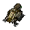
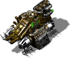

Medusa


Level 1 (base building)
- Power required:
- 400
- Energy (HP):
- 600
- Build time:
- 12 s?
- Flight costs:
- Extract 1000
- Iron 500
- Carbon 100
- Titanium 100
Costs: Extract 1200 Iron 600 Carbon 450 Titanium 200
Upgrade 1: Gorgon
Research required: Ship

- Power required:
- 400
- Energy (HP):
- 1150
- Build time:
- 16 s?
- Flight speed:
- 2857 km/s?
- possibility
- ?
- of space
- ?
- flight
- ?
- Flight costs:
- Extract 1000
- Iron 500
- Carbon 100
- Titanium 100
Costs: Extract 1000 Iron 1000 Carbon 800 Titanium 800
Config values not shown in game (10)
SIGHT- 6
BUILDER- 50
TRACE- 2
ABILITY- 1
HEIGHT- 1
COMPONENT_QUANT- 2
SPRITE_QUANTITY- 4
TYPE- R_aSTATEK
AIBLD- AIBLD_IGNORE
AREA- 1, 1, 1, 1, 0, 0, 0, 0, 0, 0, 1, 1, 1, 1, 0, 0, 0, 0, 0, 0, 1, 1, 1, 1, 0, 0, 0, 0, 0, 0, 1, 1, 1, 0, 0, 0, 0, 0, 0, 0, 0, 0, 0, 0, 0, 0, 0, 0, 0, 0, 0, 0, 0, 0, 0, 0, 0, 0, 0, 0, 0, 0, 0, 0, 0, 0, 0, 0, 0, 0, 0, 0, 0, 0, 0, 0, 0, 0, 0, 0, 0, 0, 0, 0, 0, 0, 0, 0, 0, 0, 0, 0, 0, 0, 0, 0, 0, 0, 0, 0
Upgrade 2: Dragorgon
Research required: Starship

- Power required:
- 400
- Energy (HP):
- 2075
- Build time:
- 20 s?
- Flight speed:
- 2632 km/s?
- possibility
- ?
- of space
- ?
- flight
- ?
- Flight costs:
- Extract 1500
- Iron 800
- Carbon 400
- Titanium 200
Costs: Extract 2000 Iron 1600 Carbon 1000 Titanium 1800
Config values not shown in game (10)
SIGHT- 6
BUILDER- 50
TRACE- 2
ABILITY- 1
HEIGHT- 1
COMPONENT_QUANT- 2
SPRITE_QUANTITY- 4
TYPE- R_aSTATEK
AIBLD- AIBLD_IGNORE
AREA- 1, 1, 1, 1, 0, 0, 0, 0, 0, 0, 1, 1, 1, 1, 0, 0, 0, 0, 0, 0, 1, 1, 1, 1, 0, 0, 0, 0, 0, 0, 1, 1, 1, 0, 0, 0, 0, 0, 0, 0, 0, 0, 0, 0, 0, 0, 0, 0, 0, 0, 0, 0, 0, 0, 0, 0, 0, 0, 0, 0, 0, 0, 0, 0, 0, 0, 0, 0, 0, 0, 0, 0, 0, 0, 0, 0, 0, 0, 0, 0, 0, 0, 0, 0, 0, 0, 0, 0, 0, 0, 0, 0, 0, 0, 0, 0, 0, 0, 0, 0
Description
The transporter is used to move our warriors rapidly about a planet's surface, allowing them to support our other units in assaults on human bases. It is not suited for battle itself and will not take off if damaged.
Related
- Requires
- Mother, Initiation Bld., Menagerie, Shuttle, Ship, Starship
- Unlocks
- Medusa, Gorgon, Dragorgon
- Researched by project
- Shuttle, Ship, Starship
- Transports
- Insect (slot 0), Insectus (slot 1), Centaur (slot 2), Minotaur (slot 3), Cerberus 100 (slot 4), Cerberus 102 (slot 5), TS Vandalus (slot 6), TM Vandalus (slot 7), TL Vandalus (slot 8), RS Hydra (slot 9), RM Hydra (slot 10), RX Hydra (slot 11)
- Equivalent of the other side
- Medusa, Gorgon, Dragorgon
Config values not shown in game (9)
SIGHT- 6
BUILDER- 50
TRACE- 2
HEIGHT- 1
COMPONENT_QUANT- 2
SPRITE_QUANTITY- 4
TYPE- R_aSTATEK
AIBLD- AIBLD_IGNORE
AREA- 1, 1, 1, 1, 0, 0, 0, 0, 0, 0, 1, 1, 1, 1, 0, 0, 0, 0, 0, 0, 1, 1, 1, 1, 0, 0, 0, 0, 0, 0, 1, 1, 1, 0, 0, 0, 0, 0, 0, 0, 0, 0, 0, 0, 0, 0, 0, 0, 0, 0, 0, 0, 0, 0, 0, 0, 0, 0, 0, 0, 0, 0, 0, 0, 0, 0, 0, 0, 0, 0, 0, 0, 0, 0, 0, 0, 0, 0, 0, 0, 0, 0, 0, 0, 0, 0, 0, 0, 0, 0, 0, 0, 0, 0, 0, 0, 0, 0, 0, 0